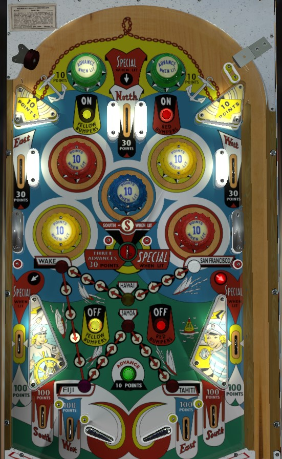

Pop bumpers: The blue bumper alternates being lit or not every time the 10-point score reel moves. Red and yellow bumpers are lit by the top red and yellow rollover buttons and unlit by the bottom red and yellow buttons. All pop bumpers score 1 point or 10 when lit. Getting the ball stuck in a nest of lit pop bumpers is the fastest way to score points.
Four Winds: North can only be collected off the plunge at the top center lane. South is collected at the center saucer or at two of the four center out lanes. East and West are collected at an upper side lane or one center out lane each. Out lanes all score 100 points; upper rollover lanes and the center saucer score 30 points. Collecting all four winds over the course of the game lights one of the side out lanes for Special, alternating each time the 10-point score reel moves.
Advances: The game starts in San Francisco. Make 1 advance by hitting a lit top passive bumper or the green rollover button right by the flippers. Make 3 advances by shooting the center saucer. Every 5th advance puts you in a new place: Hawaii, then Wake, then Fiji, then Samoa, then Tahiti. If the light on the path is exactly on Wake, Samoa, or Tahiti, the center saucer will be lit for Special. Advancing all the way to Tahiti at the end of the track lights the North rollover lane at the top of the game for a Special.
Special always scores a free game. Max displayable score is 1,999 points. There is no end of ball bonus, but tilt ends game.
